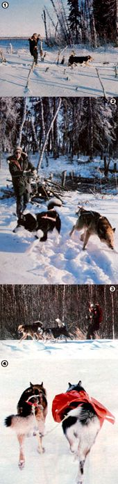

If you're hankering for a bit of outdoor adventure this winter, here's one way to go. Try...
As folks living in the rural areas of the snowbelt states know all too well, automobile travel can be downright impossible at times during the winter months . . . when snow-packed and - drifted roads tend to be the rule rather than the exception. Here in the bush country of Alaska, however, my sister Julie and I welcome heavy snowfalls. Once a good, thick, white blanket covers the ground, you see, we can hitch up our sled dogs and begin another season of canine-powered cross-country skiing!
Skijoring, or skiing with the help of a pulling dog, combines some of the speed and the excitement of alpine schussing (downhill skiing) with the wide range of travel that's possible in ski touring. It's a fast and practical way to get about, too. When skijoring on an open trail-towed by two or three dogs-I can easily cover over 40 miles a day . . . a fact which allows me to enjoy the sport while running a trapline, toting groceries out to our isolated homestead, or just exploring the countryside.
If you live in an area that's snow-covered for part of the year (and especially if you have a trainable canine or two roaming around the place), you might want to try your skill at this exhilarating Nordic sport. So come on . . . join those of us who are "going to the dogs"!
In order to outfit yourself for skijoring, you'll need to purchase (or borrow) a pair of sturdy and easily maneuverable cross-country skis and bindings, as well as comfortably fitting cross-country ski boots (poles just seem to complicate matters, so I never use them). I've found that wooden recreational-type touring skis, with standard three-pin toe bindings, hold up fairly well . . . and I prefer unlined boots that can dissipate foot perspiration to fur-cushioned ones.
If you're new at ski touring, you'd be wise to consult a good book on crosscountry skiing for information about the various types of equipment, and then rent several different makes of gear (for instance, your choices will include wooden, fiberglass, waxed, and waxless skis) before deciding on a particular brand or style. (A list of mail order suppliers is given at the end of this article.)
Other accessories that will come in handy on a skijor outing include snow goggles or sunglasses (to guard your eyes against glare), gaiters (for keeping your legs and boots from packing with snow), and a waistpack or a rucksack (pick one that "wears" comfortably and rests snugly against your body, so that your balance won't be upset by the added load) in which to stow ski wax, a first aid kit, trail maps and a compass, and a lunch or snack.
Keep in mind that, before tackling skijoring, you should become a fairly competent cross-country skier . . . or you may find yourself being dragged along the trail with a broken ski (or worse). Learn to make quick turns, schuss down steep, narrow trails, and brake to a stop before you take your four-legged powerplant friend with you on an excursion. Once you've mastered the basics, you'll have a good chance of catching on fast when you add a tail-wagger to your ski-touring rig.
Up in our icy region Alaskan malamutes, Siberian huskies, and Samoyeds are popular for both dog sledding and skijoring, because such dogs are the right size for pulling and because their heavy coats protect them against the often severely cold temperatures. However, most other medium-sized breeds (including garden-variety mongrels) can become excellent haulers, and may actually be better suited for working in the milder climates of the lower 48 than the northern breeds are.
The first consideration, when choosing a skijoring assistant, should be the dog's weight and temperament. I've found that lanky, medium-build animals-weighing between 55 and 65 pounds-are ideal for the job, because they're large enough to pull one individual without difficulty yet light enough to be easily handled. Regardless of its weight, though, the prospective toter must be nonaggressive and obedient if it is to be properly trained.
Your chosen puller will need-in addition to a strong collar-a properly fitting harness. I use nylon "fishback" harnesses on my dogs because the bindings are comfortable and, I think, superior to older-style leather harnesses, which tend to pull out of shape with extended use.
You'll also need to purchase a tow rope (or "gangline") which will form the connection between you and the dog, and-if you're planning to add more animals to your team later on-a few tuglines. I use a 10- to 12-foot braided nylon or polyethylene tow rope (I just loop it at one end for easy grasping, but you can buy a spreader bar to hang onto if you prefer) with an "O" ring, at the dog-going end, to which the harness or tuglines can be attached. If you intend to venture out for a full day or more, you might also want to purchase (or make) a couple of dog packs, so that the critters can help carry some of the gear or rations.
With the outfitting taken care of, you'll need to train your tail-wagger(s) to tote you along. It's best to undertake the initial training with only one dog at a time. Begin by teaching the animal to jog with you-without stopping-in order to accustom it to continuous, paced running. Then acquaint your pupil with its harness and tow rope, and-later-let it get used to pulling light loads. In each step of the training regime, remember to consistently use the commands "HIKE", "WHOA", "STAY", "HAW" (turn left), and "GEE" (turn right). If you're working with more than one dog, the most alert and obedient canine should be singled out as the lead dog and given extensive gee-haw drill. The importance of proper training cannot be overemphasized. Your dogs should respond, without fail, to voice commands before you combine skis and canine power.
Early on, you may find it somewhat difficult to maintain your balance without the help of ski poles, but after a bit of practice you'll be flying along in fine style. The trick to staying "afloat" is to keep your knees bent at all times, allowing them to absorb the shock of bumps on the trail, and to lean slightly toward the dog rather than back against the pull of the rope. Use the tow rope to catch your. self if you begin to tip over . . . and-when the inevitable does occur-try to relax and roll with the fall.
When skijoring on level ground or up a hill, I've found that it's sometimes helpful if I "skate" (cross-country skiing style) in rhythm with the dog's gait to help ease the critter's load. On downhill stretches, however, the skijoring techniques become a bit more complicated. With the increased speed brought about by gravity, you run the risk of crashing into the hindquarters of your unsuspecting toter. So try to decrease your downhill momentum by forming a "V" with the tips of the skis while also pushing outward from your ankles (the maneuver is called the "snowplow"). If that technique fails to slow you enough, straddle the dog as you come up behind it and-grasping its harness-push the animal forward while shoving yourself backwards. Finally, as a last resort, sit down in the trail and slide, being careful to keep your skis pointing forward. (As you become more agile, you'll be able to rise gracefully from this ignominious position by pulling the rope taut and using the dog's momentum to hoist yourself up as you reach the bottom of the hill.)
Of course, you'll also have to learn to stop quickly. There are several schools of thought as to the best method of doing this: One technique is to head off the trail into deep snow and hope that the increased drag will bring Fido to a stop. Unfortunately, this technique may very well result in your becoming buried in a drift . . . while your suddenly unencum. bered canine saunters on down the trail. Another tactic (this one is popular with beginners) is simply to sit down and drag the dog to a stop. (This is also a very good way to tear the seat off your pants.) I've concluded that the only really reliable stopping method is good prior training: Be sure that husky will halt on command, even if some particularly tempt ing critter happens to bound across the trail.
Once you become adept at skijoring with one dog, you may want to add a few more animals to the tow rope and increase your traveling speed. The typical hitch for a team of three puts one dog out in front, followed by a pair of animals trotting side by side. (Skiing with more than three beasts won't appreciably increase your speed, and the added legs will tend to create confusion.)
With a three-dog setup you can undertake longer trips, hauling gear in a rucksack and in dog packs. In fact, you can even camp out overnight with your canine crew. Outings lasting more than a couple of days, though, require carrying a prohibitive quantity of dog rations.
Skijoring is full of challenges-steep hills, icy trails, loose dogs, and unexpected turns and tumbles-and it's alsoa tremendous amount of fun. If you yearn for an alternative to motorized winter travel, and like the idea of taking off on an invigorating run with your dogs on a clear, crisp winter's morn, this sport might just be for you!
EDITOR'S NOTE: The following suppliers offer dog harnesses and skijoring (as well as dogsledding) gear . . . and all of these folks will be glad to send interested readers a free catalog upon request: Rae's Harness Shop (Dept. TMEN, 1524 East Dowling Road, Anchorage, Alaska 99507), Tun-Dra Outfit ters (Dept. TMEN, 16438 96th Avenue, Nunica, Michigan 49448), and Frank Hall (Dept. TMEN, 5875 McCrum Road, Jackson, Michigan 49201).
In addition, a number of mail order companies offer free catalogs of cross-country ski equipment. These include Eastern Mountain Sports (Dept. TMEN, Two Vose Farm Road, Peterborough, New Hampshire 03458) . . . Recreational Equipment, Inc. (Dept.TMEN, P.O. Box C88126, Seattle, Washington 98188) . . . Sports Warehouse (Dept. TMEN, 215 Main Street, New Middletown, Ohio 44442) . . . and L.L. Bean (Dept. TMEN, Freeport, Maine 04033).
|
 [1] Julie holds the new tow rope up away from her skis to keep the line taut as the dogs slow suddenly. [2] As she brings the team to a stop. Julie gathers in the line to prevent it from tangling. [3] Miki, laden with groceries, returns from a shopping trip. [4] Tok and Loki are fastened in a common hitch. Note how Loki's tugline is somewhat slack... he can't pull as hard with the extra weight of the pack. |
|
|